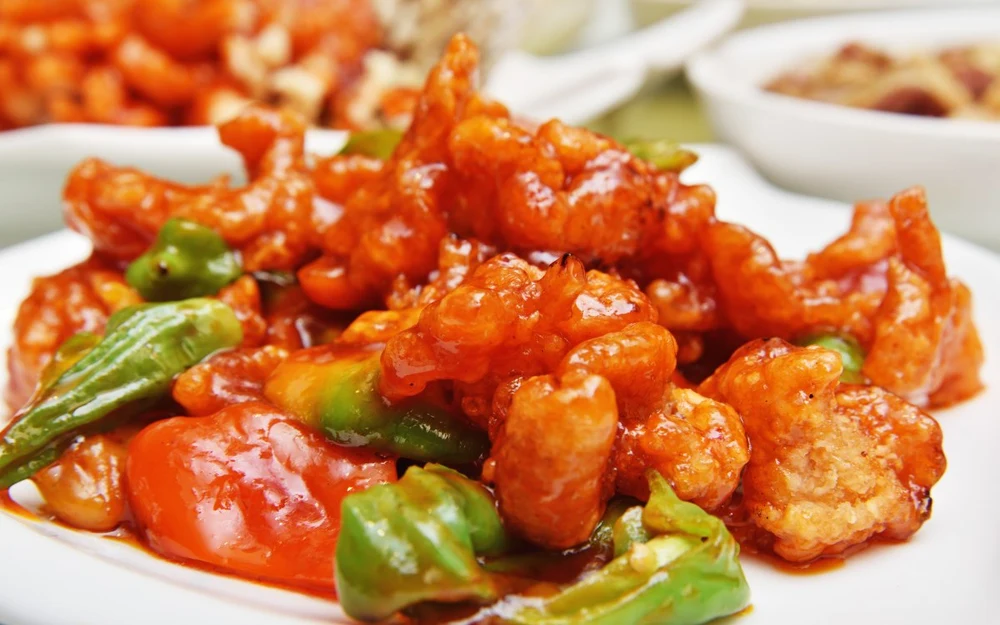

Chào mừng bạn đến với những điểm đến tuyệt vời nhất trong ngành du lịch của Trung Quốc-
Trung Quốc đất nước thiên nhiên cẩm tú tráng lệ, có nền văn hóa 3.500 năm rực rỡ, khác biệt với sắc đỏ của Tử Cấm Thành, Vạn Lý Trường Thành, không gian hiện đại xen kẽ những lâu đài và tòa thành cổ, Trung Quốc là một vùng đất mê hoặc bất cứ khách du lịch nào.
Vạn Lý Trường Thành
Vạn Lý Trường Thành dài khoảng 6000km, là một trong bảy kỳ quan của Thế giới và được UNESCO công nhận là Di sản Văn hóa Thế giới. Là bức tường thành bắc từ Đông sang Tây băng qua sa mạc, rừng cây, núi non, nơi này là nhân chứng lịch sử sống mãi với thời gian của Trung Quốc.
Tử Cấm Thành
Tử Cấm Thành là nơi cư trú của 24 vị vua thời nhà Minh và nhà Thanh từ năm 560 đến năm 1911. Thành cũng từng được UNESCO công nhận là Di sản Văn hóa Thế giới, đến đây bạn sẽ ngạc nhiên về vẻ tráng lệ và tìm hiểu về lịch sử các đời vua từng sống ở đây.
Vịt Quay Bắc Kinh
Là một trong những món ăn đặc trưng và nổi tiếng nhất, vịt quay Bắc Kinh đã trở thành biểu tượng của ẩm thực Trung Quốc.
Thịt Heo Xào Chua Ngọt
Đặc điểm của món này là sự kết hợp hài hòa giữa vị chua từ dấm, ngọt từ đường và vị đậm đà của thịt heo.
Đậu Phụ Tứ Xuyên
Đậu phụ Tứ Xuyên mang lại cho bạn trải nghiệm ẩm thực đầy bất ngờ và thú vị với hương vị phong phú của các nguyên liệu.